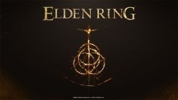

elden ring |
|
|---|---|
| Nome | Elden Ring |
| Direzione | Hidetaka Miyazaki |
| Sceneggiatura | George R. R. Martin |
| Sviluppo | FromSoftware |
| Pubblicazione | Bandai Namco Entertainment |
| Piattaforme | PC, Playstation5, Playstation 4, Xbox One, Xbox Series |
| Data di pubblicazione | 25 Febbraio 2022 |
| Genere | ARPG Open World |
| Online | Sì |
Elden Ring è un ARPG a mondo aperto sviluppato da FromSoftware e pubblicato da Bandai Namco Entertainment. Il gioco è diretto da Hidetaka Miyazaki e prodotto in collaborazione con l'autore di best-seller del New York Times George R. R. Martin, che ha creato il mythos delle Lands Between. Elden Ring è disponibile su PC, Xbox One, Playstation 4, Xbox Series e Playstation 5. È stato lanciato il 25 febbraio 2022.
"In un'intervista con Bandai Namco, il direttore del gioco Hidetaka Miyazaki ha spiegato il processo di collaborazione che ha coinvolto Martin discutendo le idee di Miyazaki, per poi scrivere la storia del mondo dopo. Confermando questo in una discussione con IGN, Miyazaki ha spiegato che sentiva che il processo di progettazione dei videogiochi sarebbe stato troppo costrittivo per l'autore. Così, mentre Martin ha fornito il "mythos", la storia del gioco è tutta di Miyazaki".
Elden Ring è un ARPG che introduce un nuovo open-world in cui i giocatori possono aspettarsi una scala mondiale più ampia, permettendo la libertà di esplorazione. Mette anche in evidenza una quantità significativa di elementi RPG, "una grande varietà di armi, magie e modi per ingaggiare i nemici con le strategie che più vi si addicono", come dice Miyazaki.
Elden Ring è un RPG d'azione in terza persona con un'ambientazione dark fantasy dove la storia ruota intorno all'Elden Ring. La leggenda dice che l'anello detiene un potere inimmaginabile "quello che comandava le stelle, dando alla vita il suo massimo splendore" e che l'anello è stato distrutto da qualcosa o qualcuno. Questo porta quindi alla distruzione e alla decadenza del mondo, il cielo che brucia, e porta dei paralleli con il sole che crolla nell'universo dei Souls.
| Minimi | Raccomandati | |
|---|---|---|
| Processore | Intel Core i5-8400 / AMD FX-Ryzen 3 3300X | Intel Core i7-8700K / AMD Ryzen 5 3600X |
| RAM | 12 GB | 16 GB |
| OS | Windows 10 | Windows 11/10 |
| Scheda Video | Nvidia GeForce GTX 1060 3GB / AMD Radeon RX 580 4GB | Nvidia GeForce GTX 1070 8GB / AMD Radeon RX Vega 56 8GB |
| Directx | Directx 12 (Feature Level 12.0) | Directx 12 (Feature Level 12.0) |
| Spazio | 60 GB | 60 GB |
| Scheda Audio | Windows-Compatible Audio Device | Windows-Compatible Audio Device |